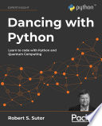

Como Ingressar na Área de Computação Quântica:
Lista de Cursos:
FIAP - Computação Quântica Fundamentals & Algorithms: Hands-On
O curso conta com 3 modulos/18horas, tendo como pré-requistos familiaridade com programação em Python, Física e Matemática.Neste curso, você vai compreender a Computação Quântica desde seus princípios Físicos, Matemáticos e Estatísticos até a aplicação dos algoritmos quânticos mais utilizados em simulações computacionais de computadores quânticos, com criação de circuitos e utilização da plataforma Qiskit da IBM.
Saiba mais: FiapIntrodução ao Azure Quantum
Curso da Microsoft para começar a explorar a computação quântica, tendo como pré-requisitos: conhecimento básico do Ecossistema Azure, Algreba linear e ter familiarido no Visual Studio Code. Este curso ensina a identificar os tipos de problemas que os algoritmos quânticos podem solucionar com mais eficiência do que os algoritmos clássicos, criar programas quânticos básicos usando o Quantum Development Kit e o Q#, interagir com o serviço de nuvem do Azure Quantum, e adaptar e criar aplicativos em Q# para executá-los no hardware.
Saiba mais: Introdução ao Azure QuantumBircham International University
Para ser admitido oficialmente na Universidade à distância Bircham deve enviar por correio a solicitação oficial de admissão devidamente preenchida, datada e assinada. Pode baixar essa solicitação através da nossa página web, imprimi-la e preenche-la, ou senão solicitar que enviemos por correio. Envie a solicitação e os documentos anexos pelo correio para nosso endereço. Também pode nos enviar a solicitação e todos os documentos que a acompanham em formato eletrônico PDF ao nosso e-mail.
Máster (Mestrado / Pós-graduação) online à distância de Bircham International University. Este programa à distância se concentra no desenvolvimento da tecnologia da computação com base nos princípios da teoria quântica, que explica o comportamento da energia e da matéria nos níveis atômico e subatômico
Doutorado (Doctor Ph.D.) Computação Quântica - Bircham International University. Este programa à distância estuda o uso de fenômenos quânticos como a superposição e o entrelaçamento para realizar operações informáticas. Os computadores quânticos realizam cálculos baseados na probabilidade do estado de um objeto antes de que seja medido, no lugar de somente 1 ou 0, o que significa que tem o potencial de processar exponencialmente mais dados na comparação com os computadores clássicos.
PUC-Rio
Este curso tem como objetivo apresentar ao aluno a área interdisciplinar de Computação Quântica e as ferramentas computacionais necessárias para simular, modelar e implementar algoritmos e protocolos de computação quântica e comunicação quântica na prática, tem como pré requisito: conhecimento em álgebra linear.
Saiba mais: Puc-RioTop 10 melhores universidades para mestrado e Doutorado em computação quântica segundo o site The Quantum Insider
- MIT’S LINCOLN LABORATORY
- UNIVERSITY OF CALIFORNIA BERKELEY
- UNIVERSITY OF CHICAGO
- UNIVERSITY OF MARYLAND’S JOINT QUANTUM INSTITUTE (JQI)
- UNIVERSITY OF SOUTHERN CALIFORNIA’S CENTER FOR QUANTUM INFORMATION SCIENCE AND TECHNOLOGY (CQIST)
- CALIFORNIA INSTITUTE OF TECHNOLOGY (CALTECH)
- STANFORD UNIVERSITY
- HARVARD UNIVERSITY
- CARNEGIE MELLON UNIVERSITY
- UNIVERSITY OF COLORADO BOULDER
Livros

Escrito por Chris Bernhardt, publicado em 2019 pela MIT Press, é um livro de introdução a computação quântica que contém 216 páginas e 9 capitulos.Neste livro, Chris Bernhardt oferece uma introdução à computação quântica que é acessível a qualquer pessoa que esteja confortável com a matemática do ensino médio. Ele explica qubits, emaranhamento, teletransporte quântico, algoritmos quânticos e outros tópicos relacionados ao quantum da forma mais clara possível para o leitor em geral. Bernhardt, ele próprio um matemático, simplifica a matemática o máximo que pode e fornece exemplos elementares que ilustram tanto como a matemática funciona quanto o que ela significa. Bernhardt introduz a unidade básica da computação quântica, o qubit, e explica como o qubit pode ser medido; discute o emaranhamento – que, segundo ele, é mais fácil de descrever matematicamente do que verbalmente – e o que significa quando dois qubits estão emaranhados (citando a caracterização de Einstein do que acontece quando a medição de um qubit emaranhado afeta o segundo como "ação assustadora à distância"); e introduz a criptografia quântica. Ele recapitula tópicos padrão da computação clássica - bits, portões e lógica - e descreve o engenhoso computador de bola de bilhar de Edward Fredkin. Ele define portas quânticas, considera a velocidade dos algoritmos quânticos e descreve a construção de computadores quânticos. Ao final do livro, os leitores entendem que a computação quântica e a computação clássica não são duas disciplinas distintas, e que a computação quântica é a forma fundamental da computação. A unidade básica de computação é o qubit, não o bit.
.jpg)
Escrito por Scott Aeronson, publicado em 2013 pela CAMBRIDGE UNIVERSITY Press tendo 398 páginas, este livro leva os leitores a um passeio por algumas das ideias mais profundas de matemática, ciência da computação e física. Cheio de insights, argumentos e perspectivas filosóficas, o livro cobre uma incrível variedade de tópicos. Começando na antiguidade com Demócrito, ele progride através da lógica e teoria dos conjuntos, computabilidade e teoria da complexidade, computação quântica, criptografia, o conteúdo de informação dos estados quânticos e a interpretação da mecânica quântica. Há também longas discussões sobre viagens no tempo, o Paradoxo de Newcomb, o princípio antrópico e as visões de Roger Penrose. O estilo informal de Aaronson torna este livro fascinante acessível a leitores com formação científica, bem como estudantes e pesquisadores que trabalham em física, ciência da computação, matemática e filosofia.

Escrito por Jack D. Hidrary, publicado em 2019 pela SPRINGER contendo uma nova edição em 2021, livro muito usado em programas de mestrado e doutorado,contém 422 páginas. Este livro integra os fundamentos da computação quântica com uma abordagem prática de codificação para este campo emergente; é o primeiro a reunir esses elementos de forma atualizada. Este trabalho é adequado tanto para cursos acadêmicos quanto para treinamentos técnicos corporativos.Este volume é composto por três livros sob uma única capa: A Parte I descreve os fundamentos necessários da computação quântica e dos circuitos quânticos. A Parte II percorre o cânone dos algoritmos de computação quântica e fornece código sobre uma variedade de métodos de computação quântica em uso atual. A Parte III abrange o kit de ferramentas matemáticas necessário para dominar a computação quântica. Recursos adicionais incluem uma tabela de operadores e elementos de circuito e um site GitHub complementar fornecendo código e atualizaçõe

Escrito por Venkateswaran Kasirajan, publicado em 2022 pela SPRINGER, o livro possui 463 páginas. Este livro introdutório sobre computação quântica inclui uma ênfase no desenvolvimento de algoritmos. Apropriada tanto para estudantes universitários quanto para desenvolvedores de software interessados em programar um computador quântico, esta abordagem prática para a computação quântica moderna leva o leitor através do background necessário e até os desenvolvimentos mais recentes.
Começando com capítulos introdutórios sobre a matemática e a mecânica quântica necessárias, Fundamentos da Computação Quântica prossegue descrevendo quatro principais modalidades de qubit e explica os princípios fundamentais da computação quântica em detalhes. Fornecendo uma derivação passo a passo de matemática e código-fonte, alguns dos algoritmos quânticos bem conhecidos são explicados de maneiras simples para que o leitor possa experimentá-los no IBM Q ou no Microsoft QDK. O livro também inclui um capítulo sobre computação quântica adiabática e conceitos modernos, como computação quântica topológica e códigos de superfície. Características: Capítulos fundamentais que constroem a base necessária sobre matemática e mecânica quântica. Exemplos e ilustrações fornecem uma abordagem prática da programação quântica com exercícios de final de capítulo. O tratamento detalhado em quatro principais modalidades de qubit - íons presos, transmons supercondutores, qubits topológicos e pontos quânticos - ensina como os qubits funcionam para que os leitores possam entender como os computadores quânticos funcionam sob o capô e criar algoritmos eficientes e códigos de correção de erros. Também introduz qubits protegidos - qubits 0-π, qubits protegidos por paridade fluxon e qubits protegidos por paridade de carga. Princípios da computação quântica, tais como princípio de superposição quântica, emaranhamento quântico, teletransporte quântico, teorema da não-clonagem, paralelismo quântico e interferência quântica são explicados em detalhes. Um capítulo dedicado ao algoritmo quântico explora algoritmos baseados em oráculo e na Transformada Quântica de Fourier em detalhes com matemática passo a passo e código de trabalho que é executado no IBM QisKit e no Microsoft QDK. Tópicos sobre Paradoxo EPR, protocolos de Distribuição de Chaves Quânticas, formalismo de Matriz de Densidade e formalismo de Estabilizador são intrigantes. Enquanto se concentra no modelo de porta universal da computação quântica, este livro também introduz a computação quântica adiabática e o recozimento quântico. Este livro inclui uma seção sobre computação quântica tolerante a falhas para tornar as discussões completas. Os tópicos sobre Correção de Erros Quânticos, códigos de superfície, como código tórico e código Planar, e qubits protegidos ajudam a explicar como a tolerância a falhas pode ser construída no nível do sistema.
Escrito por Robert S. Sustor, publicado em 2021 pela Packt Publishing Ltd, tendo 744 páginas. Desenvolva habilidades em Python e Computação Quântica implementando algoritmos interessantes, funções matemáticas, busca clássica, análise de dados, plotagem de dados, técnicas de aprendizado de máquina e circuitos quânticos. Principais recursos Criam circuitos quânticos e algoritmos usando o Qiskit e execute-os em hardware e simuladores de computação quântica. Aprenda a maneira pythonica de escrever código elegante e eficienteDelve os recursos avançados do Python, incluindo aprendizado de máquina, análise de dados e pesquisaDescrição do livro Dançar com Python ajuda você a aprender Python e computação quântica de forma prática. Ele ajudará você a explorar como trabalhar com números, cadeias de caracteres, coleções, iteradores e arquivos. O livro vai além de funções e aulas e ensina a usar Python e Qiskit para criar portas e circuitos para computação clássica e quântica. Saiba como o quantum estende as técnicas tradicionais usando o Grover Search Algorithm e o código que o implementa. Mergulhe em algumas aplicações avançadas e amplamente utilizadas do Python e revisite strings com ferramentas mais sofisticadas, como expressões regulares e processamento básico de linguagem natural (NLP). Os capítulos finais apresentam análise de dados, visualizações e aprendizado de máquina supervisionado e não supervisionado. Ao final do livro, você será proficiente em programar os mais recentes e poderosos computadores quânticos, à maneira Pythonic. O que você vai aprender: Explore diferentes portas quânticas e construa circuitos quânticos com Qiskit e Python, Escreva código sucinto da maneira pythonica usando métodos mágicos, iteradores e geradores Analise dados, construa modelos básicos de aprendizado de máquina e plote os resultadosPesquise informações usando o algoritmo de pesquisa Grover quânticoOtimize e teste seu código para ser executado de forma eficiente. O livro irá ajudá-lo a começar com a codificação para Python e Computação Quântica. Familiaridade básica com álgebra, geometria, trigonometria e logaritmos é necessária, pois o livro não cobre a matemática detalhada e a teoria da computação quântica. Você pode conferir o livro Dancing with Qubits do autor, também publicado pela Packt, para uma introdução acessível e abrangente à computação quântica.
Experiências práticas e projetos
Você pode usar o Azure Quantum(Microsoft) e a IBM Quantum(IBM) para a criação de soluções quânticas e para aprender mais sobre computação quântica
Azure QuantumIBM Quantum
Um computador quântico não é um supercomputador que pode fazer tudo mais rapidamente. Na verdade, um dos objetivos da pesquisa de computação quântica é estudar quais problemas podem ser resolvidos por um computador quântico mais rápido do que um computador clássico e quão grande pode ser a aceleração. Os computadores quânticos se dão excepcionalmente bem com problemas que exigem o cálculo de um grande número de combinações possíveis. Esses tipos de problemas podem ser encontrados em muitas áreas, como simulação quântica, criptografia, aprendizado de máquina quântico e problemas de pesquisa.
Aplicações futurasa incerteza quântica poderia ser usada para criar chaves privadas para criptografar mensagens enviadas de um local a outro de modo que os hackers não pudesem copiar secretamente a chave com perfeição devido à incerteza quântica eles teriam que quebrar as leis da física quânticas para "hackear" a chave.
poderiam transformar a assistência médica e os medicamentos, ex: a concepção e a ánalise de moléculas para o desenvolvimento de medicamentos é um desafio hoje em dia, seriam facilitados pois ele opera usando as mesmas propriedades quânticas da moléculas que está tentando similar, assim simulações quânticas futuras em larga escla para o desenvolvimento de medicamentos talvez pudessem levar o tratamento de doenças
teletrasporte de informações de um local a outro sem transmiti-los fisicamento, é possível porque essa identidades fluidas das partículas quânticas podem ficar presas no espaço e no tempo de tal amneira que quando mudarmos algo sobre uma partícula ela pode impactar outra e isso cria um canal para o teletransporte.
Depoimento de pessoas da área
Dr. Robert SutorO Dr. Robert Sutor, um executivo de P&D responsável pelo programa IBM Q, compartilhou suas percepções sobre o estado da indústria de computação quântica. Ele explica que a computação quântica (QC) não é um substituto para a computação clássica; ajuda a resolver alguns problemas que a computação clássica simplesmente não consegue lidar.Por exemplo, ele usa o exemplo de uma única molécula de cafeína. A quantidade de informação necessária para descrever sua configuração de energia seria de 10 a 48 bits. Em comparação, o número de átomos na Terra é estimado em 10 a 49º, ou 10 a 50º. Então, em teoria, para uma única molécula de cafeína, você precisaria de um número de bits comparável a até 10% do número de átomos em todo o planeta. Isso não vai acontecer com os computadores clássicos,No entanto considere os maiores computadores quânticos que temos atualmente na IBM. São 50 qubits — a unidade computacional básica do QC. Você poderia representar a energia dessa mesma molécula de cafeína em 160 qubits exatamente. E já estamos com 50 agora. Se tudo der certo, chegaremos a 160 e mais para os anos 1000 e 10.000 de qubits.À medida que obtivermos máquinas cada vez mais poderosas, seremos capazes de fazer esses cálculos com outros produtos químicos, moléculas, talvez medicamentos para a saúde ou materiais novos. Esses são apenas exemplos. Existem outras aplicações em IA, em finanças ou em otimização geral também